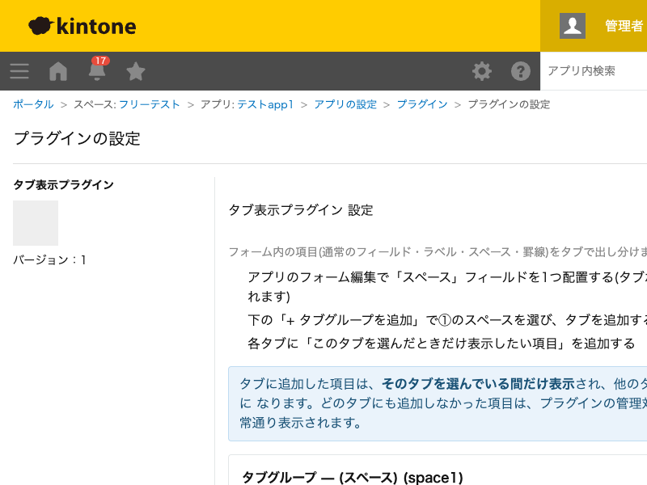

GovAppsプラグイン 安全性を確認できる無料kintoneプラグイン集
フォーム内の項目(通常のフィールド・ラベル・スペース・罫線)をタブで出し分けるプラグインです。アプリの フォームに配置した「スペース」フィールドをアンカーとしてタブUIを描画し、タブを切り替えるとそのタブに 割り当てた項目だけが表示されます。項目数が多いフォームを用途別・工程別にすっきり見せたいときに使えます。
項目数が多いフォームを、用途ごとにタブで分けて表示できます。「基本情報」「連絡先」「その他」のようにタブを分けておくと、レコード追加・編集画面がすっきりして入力しやすくなります。タブに割り当てなかった項目は常に表示されたままなので、常に見せておきたい項目(タイトルなど)はどのタブにも入れなければ影響を受けません。
同じ項目を複数のタブに重複して割り当てることもできます。その場合、アクティブなタブにその項目が含まれていれば表示されます(例えば「概要」フィールドを全タブ共通で見せたい場合など)。
スペースフィールドを複数配置すれば、タブグループも複数持てます。画面上部に「入力用タブ」、画面下部に「参照用タブ」のように、独立したタブ切り替えを同じフォーム内に複数設置できます。
タブに追加しなかった項目は常に表示されたままです。非表示にしたい項目は、必ずいずれかのタブに割り当ててください。
kintoneセキュアコーディングガイドラインに沿って実装時にチェックしています。特に重要な点は次のとおりです。
innerHTMLではなくtextContentまたはcreateElement + <template>のみを使用しています。kintone.app.getFormLayout()・kintone.app.record.getSpaceElement()・kintone.app.record.setFieldShown()のJavaScript APIのみで行います。setFieldShown()によるフィールドの非表示化はUIレベルの制御であり、非表示にした項目の値自体はレコードデータとして保持され続けます。「特定のタブでフィールドを隠す」ことはアクセス権による制御とは異なり、情報を完全に秘匿する機能ではない点にご注意ください。詳細な確認項目・確認日は下記GitHubのチェックリストに全項目を掲載しています。

このプラグインはREST APIを一切実行しません。フォームのレイアウト取得はkintone.app.getFormLayout()、
フィールドの表示/非表示切り替えはkintone.app.record.setFieldShown()のみで行い、いずれもJavaScript
APIです。API実行数制限に影響することはありません。